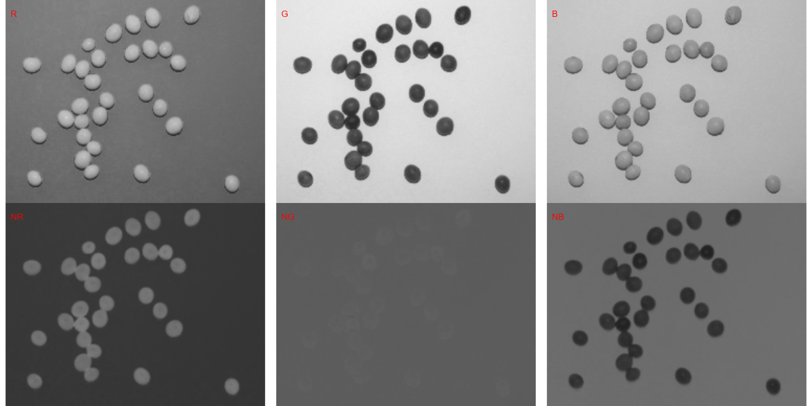
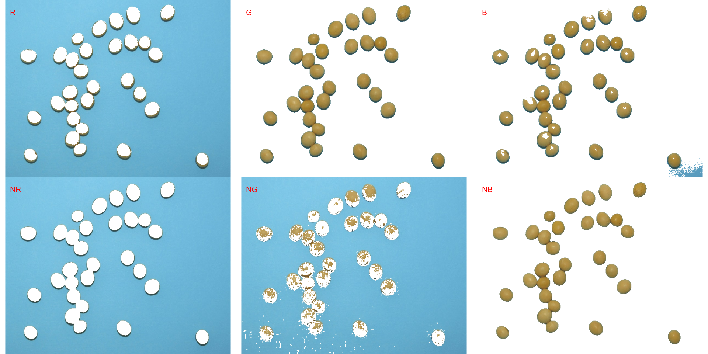

Image segmentation with pliman
Tiago Olivoto
2021-05-10
segmentation.RmdGetting started
Image segmentation is the process of partitioning a digital image into multiple segments (sets of pixels or image objects). In the context of plant image analysis, segmentation is used to simplify the representation of an image into something easier to analyze. For example, when using count_objects() to count crop grains, first the grains need to be isolated (segmented) from the background. In pliman the following functions can be used to segment an image.
-
image_binary()to produce a binary (back and white) image -
image_index()to produce a segmented image (image objects and a white background).
Both functions segment the image based on the value of some image index, which may be one of the RGB bands or any operation with these bands. Internally, these functions call image_index() to compute these indexes.
Getting image indexes
pliman provides a set of indexes that can be used to segment images. For a list of supported indexes consult the documentation of image_index() function. Here, we use the argument index" to test the segmentation based on the RGB and their normalized values. The results are shown in the plot according to the order of the indexes in the index argument, filled ‘by row’. Users can also provide your index with the argument my_index.
library(pliman)
#> |===========================================|
#> | Tools for Plant Image Analysis (pliman) |
#> | Author: Tiago Olivoto |
#> |===========================================|
soy <- image_import(image_pliman("soybean_touch.jpg"))
image_show(soy)
# Compute the indexes
indexes <- image_index(soy, index = c("R, G, B, NR, NG, NB"))
# Create a histogram with the RGB values
plot(indexes)
In this example, we can see the distribution of the RGB values (first row) and the normalized RGB values (second row). The two peaks represent the grains (smaller peak) and the blue background (larger peak). The clearer the difference between these peaks, the better will the image segmentation.
Producing a segmented image
The function image_segmentation() is used to segment images using image indexes. In our example, we will use the same indexes computed below to see how the image is segmented. The output of this function can be used as input in the function count_objets().
segmented <- image_segment(soy, index = c("R, G, B, NR, NG, NB"))
It seems that the “NB” index provided better segmentation. “R” and “NR” resulted in an inverted segmented image, i.e., the grains were considered as background and the remaining as ‘selected’ image. To circumvent this problem, we can use the argument invert in those functions.
image_segment(soy,
index = c("R, NR"),
invert = TRUE)Producing a binary image
We can also produce a binary image with image_binary(). Just for curiosity, we will use the indexes "R" and "NB". By default, image_binary() rescales the image to 30% of the size of the original image to speed up the computation time. Use the argument resize = FALSE to produce a binary image with the original size.
binary <- image_binary(soy, index = c("R, NB"))
# original image size
image_binary(soy,
index = c("R, NB"),
resize = FALSE)